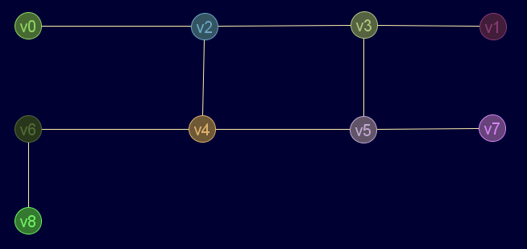

Descripción
Obtiene el grado total mínimo de un grafo y los nodos que lo tienen
Cadena de entrada
gr_gradomin
Cadena de salida
GRAFO.gradomin
Uso
gr_gradomin(<grafo>)
Valor devuelto
Diccionario con claves grado y nodos
Ejemplos
gr_nuevo([[0,0,1,0,0,0,0,0,0],[0,0,0,1,0,0,0,0,0],[1,0,0,1,1,0,0,0,0],[0,1,1,0,0,1,0,0,0],[0,0,1,0,0,1,1,0,0],[0,0,0,1,1,0,0,1,0],[0,0,0,0,1,0,0,0,1],[0,0,0,0,0,1,0,0,0],[0,0,0,0,0,0,1,0,0]],falso)
Salida en JMEScriptGUI con visor de grafos v0.1:

gr_gradomin(gr_nuevo([[0,0,1,0,0,0,0,0,0],[0,0,0,1,0,0,0,0,0],[1,0,0,1,1,0,0,0,0],[0,1,1,0,0,1,0,0,0],[0,0,1,0,0,1,1,0,0],[0,0,0,1,1,0,0,1,0],[0,0,0,0,1,0,0,0,1],[0,0,0,0,0,1,0,0,0],[0,0,0,0,0,0,1,0,0]],falso))
VectorEvaluado: { 'grado': 1 'nodos': [0,1,7,8] }
Véase también…
Desde / Última modificación
v0.6.2.0